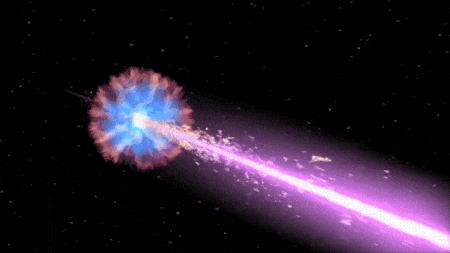

As a Postdoctoral Fellow at the University of Birmingham, UK, I specialize in the study of high-energy transients, with a particular focus on Gamma-Ray Bursts (GRBs). These intense flashes of gamma-rays, ranging from milliseconds to thousands of seconds, are the brightest objects in the universe for a brief period.

Key Research Areas
- Gamma-Ray Bursts and their counterparts
- High-energy transients and their connection to stellar evolution
- Compact binaries and collapsars
My research involves exploring GRBs at high redshifts to understand the star formation history of the universe. By studying these events, we can gain insights into the evolution of galaxies and the processes that drive the formation of stars and black holes.
To learn more about my work and its implications for astrophysics, feel free to browse through the details on my research and publications.